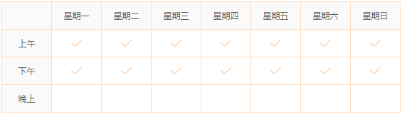

奶茶店兼职
160元/天 | 日结
更新2016-11-12 浏览：25人 申请：2人
招聘人数 20人
有效期限 长期招聘
工作区域 中原、高新区、惠济、郑东新区、管城区、二七、金水
留言询问
收藏
职位详情
工作时间
职位描述
招聘一批兼职人员，有时间来做兼职吧！日结；
1、年龄18-30岁，身体健康，积极认真，无需任何工作经验；
2、品行端正，不得半途而废；
3、店内卫生以及协助营业、活动等工作；
公司介绍
公司简介
英式奶茶是奶茶的鼻祖，港式丝滑奶茶是奶茶的弘扬，那么海南椰香奶茶便是奶茶中的“贵族”，纯正的椰香奶茶是用椰子粉勾红茶粉的，椰香奶茶茶体保持奶茶的粉茶色，冲泡出来的奶茶格外香气怡人，椰子粉赋予了海南椰香奶茶独特的韵味，让喝过的人感觉仿佛置身海滩上椰林中漫步，有中重拾闲趣的曼妙感受。